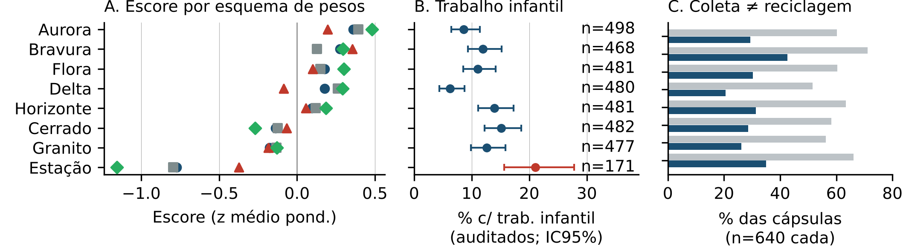

Turma: [PREENCHER] | Integrantes (nome completo – RM): [PREENCHER NOME 1 – RM] · [NOME 2 – RM] · [NOME 3 – RM]
O custo invisível do café: estratégia de consumo consciente em cápsulas
Estratégia. (1) Comprar Aurora como padrão: melhor escore ponderado em 3 de 4 esquemas de pesos e entre as 2 primeiras em 75% de 20 000 pesos aleatórios. (2) Devolver 100% das cápsulas a um ponto de coleta: sem coleta, 0 de 2 002 cápsulas foram recicladas; com coleta, 50,1% (de 3 118). (3) Trocar por Bravura se a prioridade for clima/reciclagem (vence no esquema ambiental, P=94%). (4) Evitar Estação, Granito e Cerrado (posições 6–8) e não aceitar “reciclável”, “compensado” ou “vegetal” como evidência.
Critério de “melhor” e método
Melhor = menor dano ponderado por g de café (a massa de café difere entre marcas: 5,59–6,23 g, ANOVA p<10⁻⁷⁰; CO₂e, água, desmatamento e efluentes divididos por massa_cafe_g). Escore = média ponderada dos z-scores das 8 médias de marca (sinal invertido quando menor é melhor). Pesos-base: trabalho infantil 20%, não conformidade trabalhista 10%, remuneração 10% (social 40%: dano humano é irreversível); CO₂e 15%; reciclagem efetiva 15%; desmatamento, efluentes e água 10% cada. Robustez: 4 esquemas de pesos, 20 000 pesos Dirichlet(1) e bootstrap de 1 000 reamostras de cápsulas (P(1º) abaixo). Testes: Welch e z de duas proporções, Holm (7 comparações vs. Aurora).
| Marca (n=640) | CO₂e g/g café | Água L/g | Desm. m²/g | Efluentes índ./g | Recicl. efetiva % | Trab. infantil % (aud.) | Não conf. trab. % (aud.) | Remun. rel. | Escore base | P(1º) boot. |
|---|
| Aurora | 32,8 | 2,30 | 0,207 | 0,143 | 29,4 | 8,6 | 23,3 | 0,682 | 0,36 | 64% |
| Bravura | 25,8 | 2,81 | 0,277 | 0,228 | 42,7 | 12,0 | 19,4 | 0,662 | 0,28 | 23% |
| Flora | 28,5 | 3,31 | 0,222 | 0,163 | 30,3 | 11,0 | 20,8 | 0,675 | 0,18 | 8% |
| Delta | 37,2 | 1,93 | 0,173 | 0,114 | 20,6 | 6,2 | 31,5 | 0,692 | 0,18 | 4% |
| Horizonte | 28,2 | 2,55 | 0,274 | 0,189 | 31,4 | 13,9 | 17,0 | 0,674 | 0,10 | 1% |
| Cerrado | 27,3 | 3,57 | 0,252 | 0,149 | 28,6 | 15,1 | 26,1 | 0,687 | -0,14 | 0% |
| Granito | 32,3 | 2,03 | 0,255 | 0,175 | 26,2 | 12,6 | 22,2 | 0,662 | -0,17 | 0% |
| Estação | 28,0 | 2,93 | 0,290 | 0,252 | 35,0 | 21,1* | 25,7 | 0,654 | -0,77 | 0% |
*Estação: apenas 171 de 640 cápsulas auditadas (26,7%; demais marcas 73–78%; χ² p<10⁻¹³⁰). Auditados: n=468–498 nas outras marcas. IC95% (±): CO₂e 0,5; água 0,1; reciclagem 3,5 pp; trab. infantil 2–3 pp (Estação 6).

A: ● base, ■ pesos iguais, ▲ ambiental, ◆ social (maior = melhor). C: cinza = coletada, azul = reciclada.
Evidências principais
- Clima: Bravura 25,8 g CO₂e/g café (IC95% 25,4–26,3) vs. Aurora 32,8 (32,2–33,3): Aurora emite +6,9 g/g (IC 6,2–7,6; Welch, Holm p<10⁻⁷⁰); por cápsula, 179 vs. 145 g. Delta é a pior (37,2; +11,4 vs. Bravura). Fim de vida ≈35 g em todas as marcas e destinos: os dados não mostram ganho de CO₂e ao reciclar.
- Social: trabalho infantil entre auditados: Aurora 8,6% (IC 6,5–11,4; 43/498) vs. Cerrado 15,1% (−6,5 pp, IC −10,6 a −2,5; Holm p=0,010), Horizonte 13,9% (p=0,044) e Estação 21,1% (p<10⁻⁴); vs. Delta 6,2%, Flora 11,0% e Bravura 12,0% não há diferença detectável (Holm p≥0,26). Delta tem a maior não conformidade (31,5%; Aurora 23,3%, −8,2 pp, IC −13,7 a −2,6; p=0,029) apesar de 75% auditada: auditar ≠ aprovar. Remuneração: 98,6% das cápsulas abaixo da referência em todas as marcas (médias 0,65–0,69): nenhuma marca remunera adequadamente e as diferenças (≤0,04) pouco discriminam.
- Estação: sem auditoria não se sabe; limites para trabalho infantil por cápsula: 5,6% a 79% (todos os não auditados regulares ou irregulares). Pior efluentes (0,252/g) e maior desmatamento (0,290 m²/g).
- Alegações vs. dados: Aurora “100% reciclável”: 29,4% efetivamente reciclada (26,0–33,0), −13,3 pp vs. Bravura (42,7%; Holm p=5·10⁻⁶). Horizonte: 63,4% coletada, 31,4% reciclada (metade). Granito “emissão nula”: emissão física 194,8 g/cápsula (192,8–196,8), 2ª maior (+49,7 g vs. Bravura). Flora “vegetal”: 28,5 g/g, acima do plástico da Bravura (25,8). Bravura “leve” é verdade (4,98 g), mas efluentes 0,228/g (Aurora 0,143).
Limitações
Dados sintéticos; independência por hipótese; só comparação entre as 8 marcas (nada sobre outros preparos). Indicadores sociais valem só para auditadas (dados ausentes aleatórios: não verificável). Pesos são juízo de valor: Aurora não é unânime (P(1º)=64% no bootstrap-base; no sorteio de pesos Delta é 1ª em 39%, mas com o pior CO₂e e a maior não conformidade). Aurora, Bravura, Flora e Delta são próximas no social; a escolha depende da prioridade. Sem causalidade.